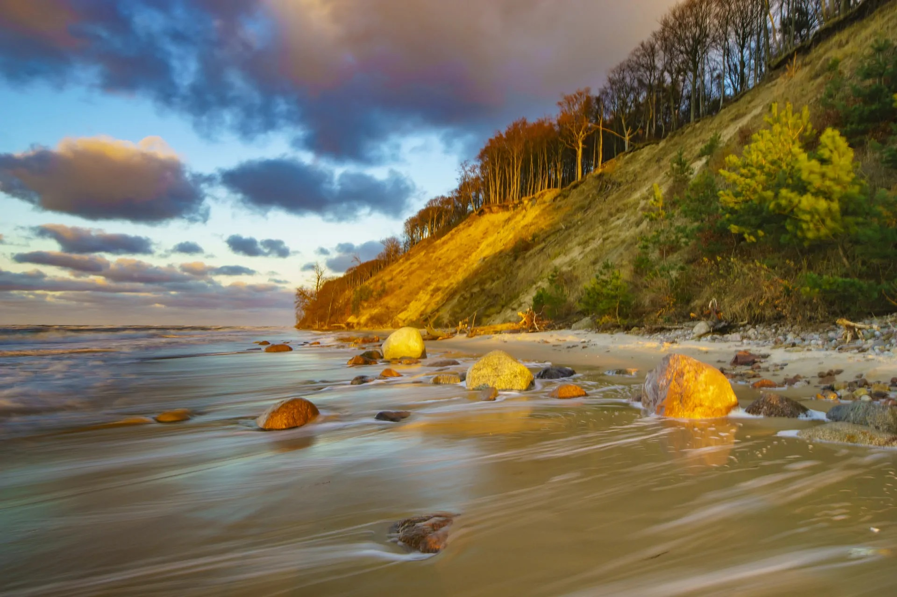
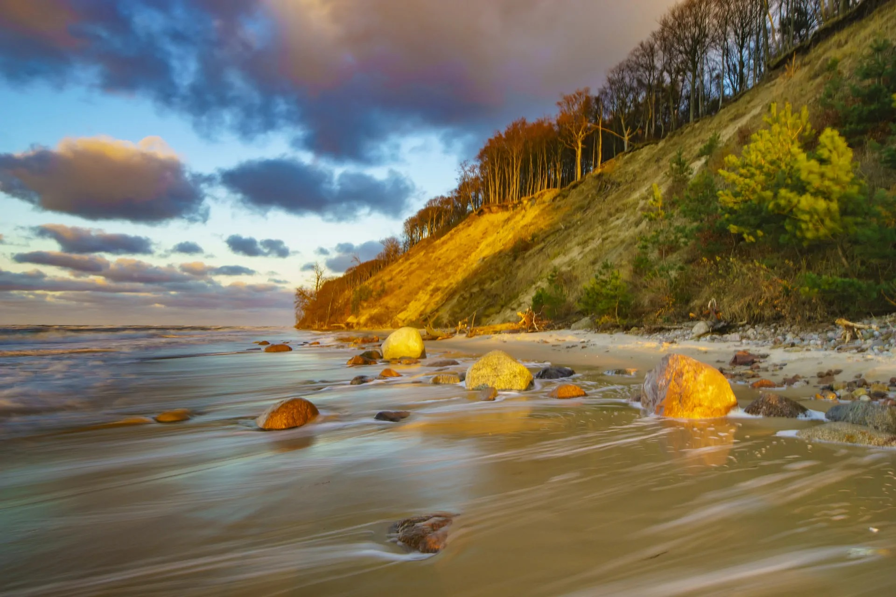

Park powstał w roku 1960 i chroni obszar o powierzchni 109,37 km². Znajduje się w województwie zachodniopomorskim, w środkowo-zachodniej części wyspy Wolin. Jego symbolem jest orzeł bielik. Na terenie parku stworzono 7 punktów ochrony ścisłej. Wyspa Wolin znajduje się na trasie głównego szlaku przelotu ptaków wzdłuż wybrzeża Bałtyku. Stąd też można tutaj spotkać ponad 230 różnych gatunków ptactwa. Najwyższe klify osiągają wysokość aż 95 m, a destrukcyjny wpływ morza na klify przesuwa linię brzegową o około 80 cm każdego roku. Proces ten nazywa się abrazją. Krajobraz dominujący na terenie parku jest związany z moreną czołową, która graniczy z morzem oraz zalewem.
 
